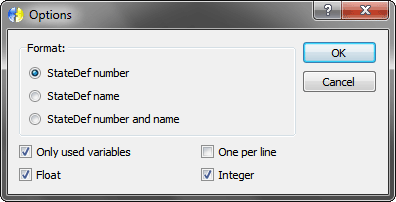
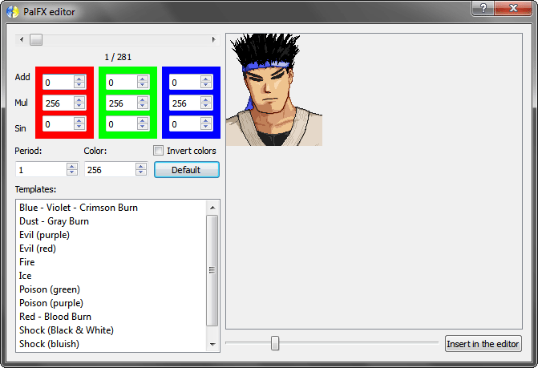

Menu States
The States menu is used to manipulate the character state machine.
New
Create a new blank document.
Open
Open an existing document.
Save
Overwrite the last saved document, if it exist. Else, execute 'Save as...'.
Save as...
Save the document on a new file.
View variable usage list
Exchange between variable usage list and text groups/blocks.
Insert variable usage log
Insert a log of variable usage. The 'Options' window will be shown.
Format: defines the format used to describe StateDefs.
Only used variables: Ignore unused variables.
One per line: inserts one StateDef per line for each var.
Float: inserts floating-point variables.
Integer: inserts integer variables.
PalFX editor
Open the PalFX ecitor.
In this editor, you can create and visualize palette effects.
Sprite selector: defines the sprite used in the preview area.
Add: amount to be added in the source color on each RGB channel.
Mul: amount to be multiplied by the result of the 'Add' in each RGB channel.
Sin: amount to be multiplied by the sin of '2 * PI * time / period' in each RGB channel to create a sine wave effect.
Period: defines the period of the sine wave in game ticks.
Color: amount of original color. 256 means original color and 0 grayscale.
Invert colors: invert all colors.
Default: load the default values.
Templates: list of all available PalFX templates.
Preview area: displays the PalFX effect at runtime.
Zoom slider: defines the current zoom level of the preview area.
Insert in the editor: inserts the PalFX code in the current cursor position of the text editor.
Offset viewer
Open the offset viewer.
In this window, you can select two animations and visualize the distance between the two axis.
Resolution: defines the resolution of the preview screen.
Flip horizontally: flips the second animation horizontally.
Flip vertically: flips the second animation vertically.
Animation 1: defines the first animation (left, blue axis).
X: defines the distance between the two axis in the X coordinate.
Y: defines the distance between the two axis in the Y coordinate.
Animation 2: defines the second animation (right, green axis).
Throw creator
Open the throw creator.
In this window, you can create a throw.
Start:
StateDef: defines the StateDef number of the throw to be used in the generated code.
Animation: defines the starting animation.
Throwing:
Animation: defines the throwing animation.
Bind:
Selector: defines the current element to be worked in.
X: defines X position within the current element.
Y: defines Y position within the current element.
Sprite priority: defines the sprite priority of the current element.
Resolution: defines the resolution of the preview screen.
Insert: generate the throw code and insert it in the text editor.
Close: closes the window and discard the changes.
End:
X velocity: defines X velocity at the end of the throw.
Y velocity: defines Y velocity at the end of the throw.
Thrown:
Animation: defines the thrown animation.